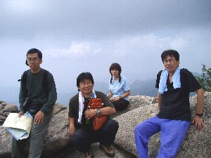
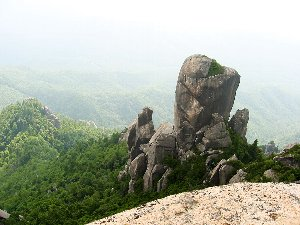
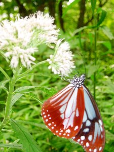

瑞牆山ハイク・カサメリ沢キャンプ | ２００４年７月 |
|---|---|
| メンバー：いづみ・かむい・珍獣・アル兄・シュガー・のび太 テント合流：Ｒｙｕｕ・キッカー・マーシーご家族 7/21 7：20興津集合＝11：15瑞牆山荘…11：55富士見平小屋…12：25天鳥川12：50…14：15瑞牆山14：30…16：50瑞牆山荘＝17：30増富の湯18：30…食堂…21：00カサメリ沢駐車場 7/22 9：00駐車場…クライミング見学…昼食…ソフトクリーム…清里観光…韮崎旭温泉…18：45興津 | |
 |  |
| 最近の企画では「晴れ」が少ないが、今回は終始快晴でした。 定刻に興津へ集合し、若干渋滞があって予定より30分遅れで登山開始。小屋までの道は砂状のコースで滑りそうだか慎重に歩く 天鳥川脇の広場で休憩。いづみさんが体調悪くて、ココで1時間超の昼寝の後に下山とのこと。 珍君に「先頭歩いて良いよ〜」と言ったら、カモシカの如く岩の上を軽快に歩き、団扇を持ったアル兄が続いた。のび太が慌てて歩いていると、横たわっていた木に頭を当てて「痛〜い」（泣） 山頂は少し霞んでいて、眼下や辺りの稜線がボンヤリだったが、景色は最高。下を覗き込もうとすると足がすくむ。端から随分離れたところで記念撮影。 | |
|  |  |
| 下山は皆の足が軽快(!?)で予定より早いペースで下る。帰りの天鳥川で、のび太・珍君が沢水を飲むも、のび太が水当たりで後程大変になる。 お花畑は最盛期が終わっていたようだが、登山道では花や蝶を楽しめた。山荘に下山するとテラスでくつろいでいた、いづみさんと合流。 のんびりと温泉・食堂での食事を済ませてから、植樹祭駐車場へ。真っ暗の中でトイレなどの位置確認し、テントを設営。（シュガーのおＮＥＷテントの設営に手間取った）。設営完了を見計らったようなタイミングでクライミング班が合流。 | |
|  |  |
| バーテンダー風なシュガーがシェイカーを駆使して、みんなに振舞ってくれて、持ち寄りおつまみなどで盛り上がる。0時頃に撤収して就寝。 翌日は6時半ころから朝食調理。レトルトを温めたり、Ｒｙｕｕさんが目玉焼きを作ってくれて、「こんな食事もありかな〜」とも思った。 テント撤収して、9時過ぎにカサメリ沢へ。ハイキング班はキッカー講師の案内で現地に向かうが、沢を横切ったり、非常に滑る道を歩き、何とかクライミングスポットへ。クライミングの真似事をしてから下山。 須山町内で蕎麦を食べ、清里のソフトクリームを食べ、清里駅前散策をして、再び温泉で汗を流してから解散。 お疲れ様でした。 | |
コメント：のび太 写真：皆さん | |